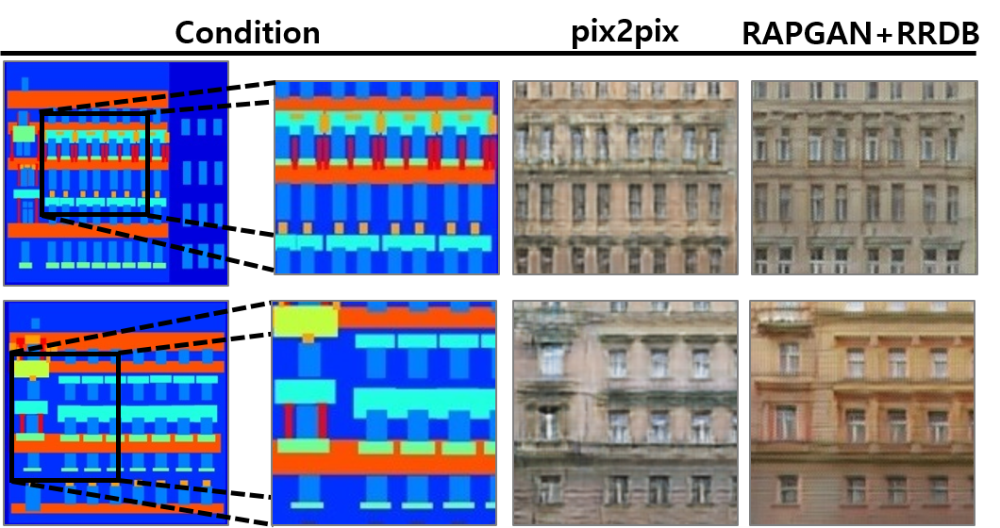
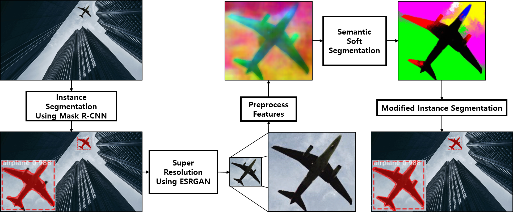
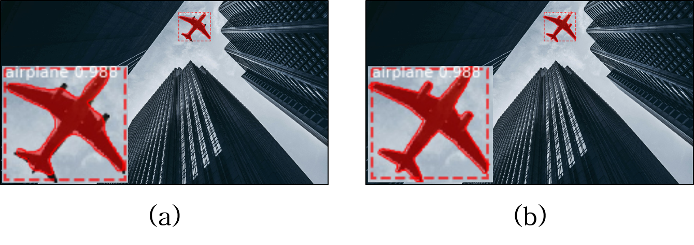

Baekseok University
CNN / GAN
Mask R-CNN
Image Generation
학부 연구실장
Head of Undergraduate Research Group
Education
- 전체평점: 4.36 / 4.5 (총 130 학점)
- 전공평점: 4.49 / 4.5 (총 79 학점)
- Overall GPA: 4.36 / 4.5 (130 credits total)
- Major GPA: 4.49 / 4.5 (79 credits total)
IPCG: Image Processing and Computer Graphics Laboratory 2018.03 ~ 2020.10 지도교수 곽노윤 IPCG: Image Processing and Computer Graphics Laboratory 2018.03 ~ 2020.10 Advisor: Prof. Noyoon Kwak
Experience
- 2020년도 IPCG 연구실장
- 매일 오전 7:30 Computer Vision 관련 세미나 진행
- Head of the IPCG undergraduate research group, 2020
- Hosted a daily computer-vision research seminar at 7:30 a.m
Projects
프로젝트를 선택하면 아래에 상세 내용이 표시됩니다 Select a project to view its details below
RAPGAN과 RRDB를 이용한 Image-to-Image Translation 성능 개선 Improved Image-to-Image Translation using RAPGAN and RRDB
연구 목표Objectives
- pix2pix 한계(저해상도, 품질 저하) 보완
- Relativistic Average Patch GAN + RRDB 기반 새로운 구조 제안
- 안정적이고 고품질의 Image-to-Image 변환
- Address pix2pix limitations (low resolution, degraded quality)
- Propose a new architecture combining Relativistic Average Patch GAN and RRDB
- Achieve stable, high-quality image-to-image translation
담당 업무Responsibilities
- RRDB 적층 Generator 설계 및 적용
- RAPGAN 기반 손실함수 설계
- Generator 사전 학습을 통한 초기 학습 불안정 해결
- Designed and applied an RRDB-stacked generator
- Designed a loss function based on RAPGAN
- Resolved early-stage training instability via generator pre-training
연구 성과Results
- 기존 pix2pix 대비 평균 FID 13% 이상 성능 향상
- 다양한 데이터셋에서 시각적으로 우수한 결과 확인
- Improved average FID by 13%+ over the original pix2pix
- Visually superior results confirmed across multiple datasets

ESRGAN과 Semantic Soft Segmentation을 이용한 객체 분할 Object Segmentation using ESRGAN and Semantic Soft Segmentation
연구 목표Objectives
- Mask R-CNN 분할 성능 보완
- 소형 객체 분할 성능 향상 기법 개발
- 초해상화 + Semantic Soft Segmentation(SSS) 기반 파이프라인 제안
- Improve Mask R-CNN segmentation performance
- Develop a technique that improves small-object segmentation
- Propose a pipeline combining super-resolution with Semantic Soft Segmentation (SSS)
담당 업무Responsibilities
- 객체 검출 및 초해상화 알고리즘 적용
- SSS와 워터쉐드 기반 분할 보정
- 제안 기법 성능 검증 및 기존 방식 비교
- Applied object detection and super-resolution algorithms
- Refined segmentation using SSS and watershed
- Validated the proposed method and compared against prior approaches
연구 성과Results
- 소형 객체 분할 성능 향상 (Mask R-CNN 대비 개선)
- 반자동 데이터셋 생성 및 고품질 영상 편집 활용 가능성 확인
- Improved small-object segmentation over baseline Mask R-CNN
- Demonstrated applicability to semi-automated dataset construction and high-quality image editing


Publications
Journal
- [2] KCI , "ESRGAN과 Semantic Soft Segmentation을 이용한 객체 분할""Object Segmentation using ESRGAN and Semantic Soft Segmentation", 사물인터넷융복합논문지 Vol. 9, No. 1, pp. 97-104Journal of Internet of Things Convergence, Vol. 9, No. 1, pp. 97-104, 2023.02
- [1] KCI , "RAPGAN와 RRDB를 이용한 Image-to-Image Translation의 성능 개선""Improving Image-to-Image Translation Performance using RAPGAN and RRDB", 사물인터넷융복합논문지 Vol. 9, No. 1, pp. 131-138Journal of Internet of Things Convergence, Vol. 9, No. 1, pp. 131-138, 2023.02
Conference
- [10] 우수논문발표상 김주은, 김준오, 윤동식, 곽노윤, "Mask R-CNN과 Image-to-Image Translation을 이용한 카툰 이미지 생성", 한국멀티미디어학회 하계학술발표대회, 2020.08
- [9] 윤동식, 곽노윤, "Relativistic Average Patch GAN과 Residual in Residual Dense Block을 이용한 개선된 Image-to-Image Translation", Korea Computer Congress (KCC) 2020, 2020.07
- [8] 윤동식, 곽노윤, "ESRGAN과 Semantic Soft Segmentation을 이용한 객체 분할의 성능 개선", 한국정보처리학회 춘계학술발표대회, 2020.05
- [7] 윤동식, 곽노윤, "Mask R-CNN과 Semantic Soft Segmentation을 이용한 객체 분할", 한국통신학회 동계종합학술발표회, 2020.02
- [6] 우수논문상 윤동식, 곽노윤, "Mask R-CNN과 Image-to-Image Translation을 이용한 카툰 스케치 이미지의 자동 채색", 한국디지털콘텐츠·정보기술학회 공동학술대회, 2019.11
- [5] 윤동식, 곽노윤, "Conditional GAN과 Mask R-CNN 기반의 Image-to-Image Translation을 이용한 차량 이미지 생성", 한국통신학회 추계종합학술발표회, 2019.11
- [4] 윤동식, 신서연, 곽노윤, "Mask R-CNN과 Conditional GAN 기반의 Image-to-Image Translation을 이용한 얼굴 이미지 생성", 제29회 신호처리합동학술대회, 2019.09
- [3] 윤동식, 최상욱, 곽노윤, "Mask R-CNN을 이용한 다중 뉴럴 스타일 전이 방법", 한국통신학회 하계종합학술발표회, 2019.06
- [2] 금상 최상욱, 윤동식, 곽노윤, "VGG Net과 Saliency Map을 이용한 다중 뉴럴 스타일 전이 방법", 한국정보기술·디지털콘텐츠학회 하계공동학술대회, 2019.06
- [1] 장려상 윤동식, 최상욱, 노성혁, 곽노윤, "Convolutional Neural Networks와 GrabCut을 이용한 다중 스타일 전이 방법", 한국통신학회 동계종합학술발표회, 2019.01
- [10] Best Presentation J. Kim, J. Kim, Dongsik Yoon, N. Kwak, "Cartoon Image Generation using Mask R-CNN and Image-to-Image Translation", Korea Multimedia Society (KMMS) Summer Conference, 2020.08
- [9] Dongsik Yoon, N. Kwak, "Improved Image-to-Image Translation using Relativistic Average Patch GAN and Residual-in-Residual Dense Blocks", Korea Computer Congress (KCC) 2020, 2020.07
- [8] Dongsik Yoon, N. Kwak, "Performance Improvement of Object Segmentation using ESRGAN and Semantic Soft Segmentation", Korea Information Processing Society (KIPS) Spring Conference, 2020.05
- [7] Dongsik Yoon, N. Kwak, "Object Segmentation using Mask R-CNN and Semantic Soft Segmentation", Korean Institute of Communications and Information Sciences (KICS) Winter Conference, 2020.02
- [6] Best Paper Dongsik Yoon, N. Kwak, "Automatic Colorization of Cartoon Sketches using Mask R-CNN and Image-to-Image Translation", Korean Digital Content & Information Technology (KDCIT) Joint Conference, 2019.11
- [5] Dongsik Yoon, N. Kwak, "Vehicle Image Generation using Conditional GAN and Mask R-CNN-based Image-to-Image Translation", KICS Fall Conference, 2019.11
- [4] Dongsik Yoon, S. Shin, N. Kwak, "Face Image Generation using Mask R-CNN and Conditional GAN-based Image-to-Image Translation", 29th Joint Conference on Signal Processing, 2019.09
- [3] Dongsik Yoon, S. Choi, N. Kwak, "Multi-Style Neural Style Transfer using Mask R-CNN", KICS Summer Conference, 2019.06
- [2] Gold Prize S. Choi, Dongsik Yoon, N. Kwak, "Multi-Style Neural Style Transfer using VGG Net and a Saliency Map", Korea Institute of Information Technology / KDCIT Summer Conference, 2019.06
- [1] Honorable Mention Dongsik Yoon, S. Choi, S. Noh, N. Kwak, "Multi-Style Transfer using Convolutional Neural Networks and GrabCut", KICS Winter Conference, 2019.01